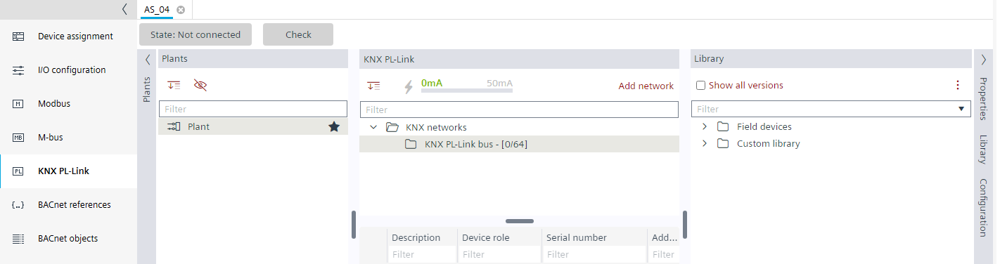

为 Desigo CC 图形准备 RDG2 设备
对于 Desigo CC 中 RDG2 设备的图形表示，必须将逻辑视图的数据点正确分配给 RDG2 设备。
在这里，我们区分 RDG2 设备是已经设计好的还是必须首先创建的。各自的工作流程略有不同。
- Workflow when RDG2 devices already are created

- Workflow when RDG2 devices must be created first

对于 Desigo CC 中 RDG2 设备的图形表示，必须将逻辑视图的数据点正确分配给 RDG2 设备。
在这里，我们区分 RDG2 设备是已经设计好的还是必须首先创建的。各自的工作流程略有不同。
